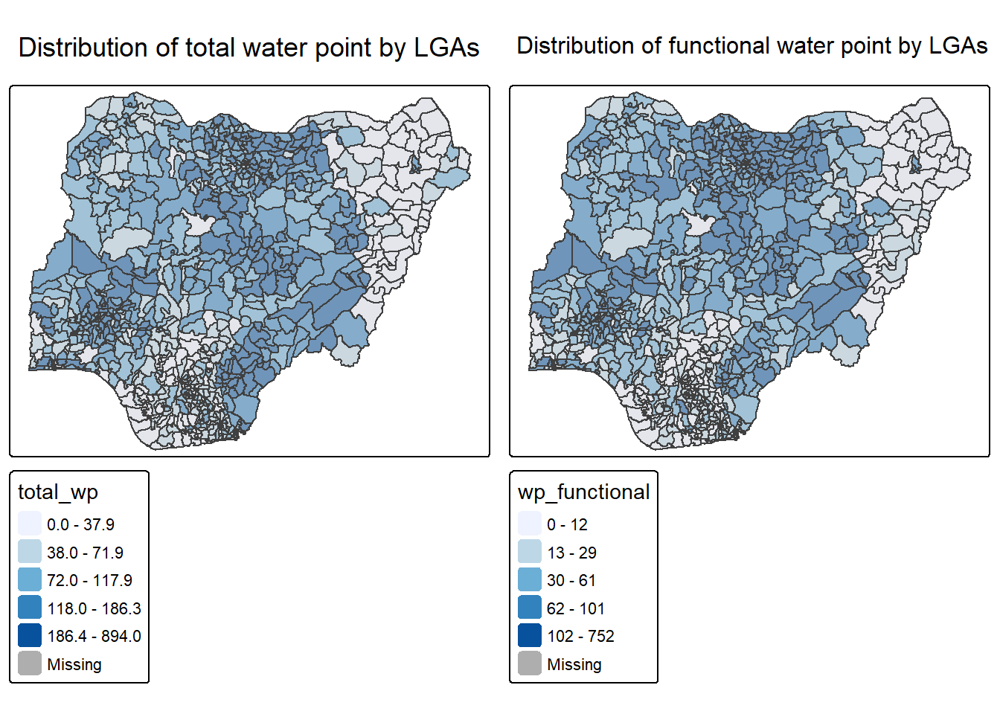
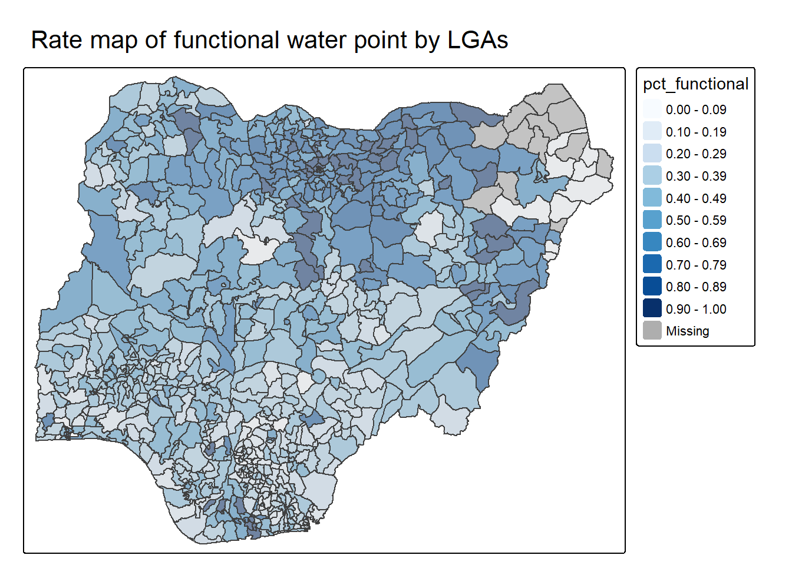
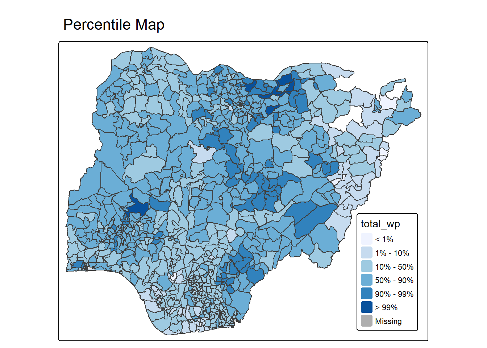
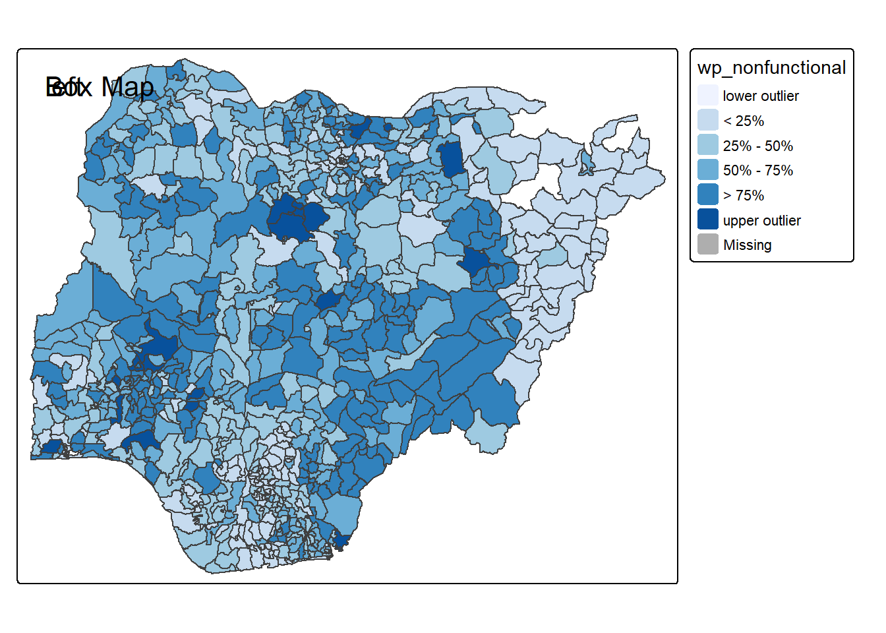

Code
pacman::p_load(sf, tmap, tidyverse)In this exercise, I continue with choropleth mapping but move beyond standard count maps. The main idea is that raw counts can be misleading when the underlying units differ a lot in size. Therefore, I focus on analytical maps such as rate maps, percentile maps and box maps.
pacman::p_load(sf, tmap, tidyverse)NGA_wp <- read_rds("../data/NGA_wp.rds")NGA_wpSimple feature collection with 774 features and 8 fields
Geometry type: MULTIPOLYGON
Dimension: XY
Bounding box: xmin: 26662.71 ymin: 30523.38 xmax: 1344157 ymax: 1096029
Projected CRS: Minna / Nigeria Mid Belt
First 10 features:
ADM2_EN ADM2_PCODE ADM1_EN ADM1_PCODE
1 Aba North NG001001 Abia NG001
2 Aba South NG001002 Abia NG001
3 Abadam NG008001 Borno NG008
4 Abaji NG015001 Federal Capital Territory NG015
5 Abak NG003001 Akwa Ibom NG003
6 Abakaliki NG011001 Ebonyi NG011
7 Abeokuta North NG028001 Ogun NG028
8 Abeokuta South NG028002 Ogun NG028
9 Abi NG009001 Cross River NG009
10 Aboh-Mbaise NG017001 Imo NG017
geometry total_wp wp_functional wp_nonfunctional
1 MULTIPOLYGON (((548795.5 11... 17 7 9
2 MULTIPOLYGON (((547286.1 11... 71 29 35
3 MULTIPOLYGON (((1248985 104... 0 0 0
4 MULTIPOLYGON (((510864.9 57... 57 23 34
5 MULTIPOLYGON (((594269 1209... 48 23 25
6 MULTIPOLYGON (((660767 2522... 233 82 42
7 MULTIPOLYGON (((78621.56 37... 34 16 15
8 MULTIPOLYGON (((106627.7 35... 119 72 33
9 MULTIPOLYGON (((632244.2 21... 152 79 62
10 MULTIPOLYGON (((540081.3 15... 66 18 26
wp_unknown
1 1
2 7
3 0
4 0
5 0
6 109
7 3
8 14
9 11
10 22p1 <- tm_shape(NGA_wp) +
tm_fill("total_wp", style = "quantile", palette = "Blues") +
tm_borders(alpha = 0.5) +
tm_layout(main.title = "Distribution of total water point by LGAs")
p2 <- tm_shape(NGA_wp) +
tm_fill("wp_functional", style = "quantile", palette = "Blues") +
tm_borders(alpha = 0.5) +
tm_layout(main.title = "Distribution of functional water point by LGAs")
tmap_arrange(p1, p2, nrow = 1)
Observation: The two maps look similar in some regions because areas with many total water points also tend to have many functional water points. However, count maps alone do not show how efficient or reliable the water-point system is.
NGA_wp <- NGA_wp %>%
mutate(
pct_functional = wp_functional / total_wp,
pct_nonfunctional = wp_nonfunctional / total_wp
)tm_shape(NGA_wp) +
tm_fill("pct_functional", style = "fixed",
breaks = seq(0, 1, by = 0.1),
palette = "Blues") +
tm_borders(alpha = 0.5) +
tm_layout(main.title = "Rate map of functional water point by LGAs")
Insight: This map is more meaningful than the count map because it standardises by total water points. Regions with fewer total points are no longer automatically shown as unimportant.
NGA_wp <- NGA_wp %>% drop_na()percent <- c(0, 0.01, 0.1, 0.5, 0.9, 0.99, 1)
var <- NGA_wp["pct_functional"] %>%
st_set_geometry(NULL)
quantile(var[, 1], percent) 0% 1% 10% 50% 90% 99% 100%
0.0000000 0.0000000 0.2169811 0.4791667 0.8611111 1.0000000 1.0000000 Student note: When variables are extracted from an sf object, the geometry comes along as well. That is why st_set_geometry(NULL) is necessary here before using base functions like quantile().
get.var() functionget.var <- function(vname, df) {
v <- df[vname] %>%
st_set_geometry(NULL)
v <- unname(v[, 1])
return(v)
}percentmap <- function(vnam, df, legtitle = NA, mtitle = "Percentile Map") {
percent <- c(0, 0.01, 0.1, 0.5, 0.9, 0.99, 1)
var <- get.var(vnam, df)
bperc <- quantile(var, percent)
tm_shape(df) +
tm_polygons() +
tm_shape(df) +
tm_fill(
vnam,
title = legtitle,
breaks = bperc,
palette = "Blues",
labels = c("< 1%", "1% - 10%", "10% - 50%", "50% - 90%", "90% - 99%", "> 99%")
) +
tm_borders() +
tm_layout(
main.title = mtitle,
legend.position = c("right", "bottom")
)
}percentmap("total_wp", NGA_wp)
Observation: The percentile map highlights the extreme ends of the distribution more clearly than a normal quantile map. It is useful when I specifically want to identify unusually low or unusually high areas.
First, I use a boxplot to understand the distribution of the non-functional water points.
ggplot(data = NGA_wp,
aes(x = "", y = wp_nonfunctional)) +
geom_boxplot()
Observation: There are clear upper outliers, so a box map can help carry this boxplot logic into space.
boxbreaks() functionboxbreaks <- function(v, mult = 1.5) {
qv <- unname(quantile(v))
iqr <- qv[4] - qv[2]
upfence <- qv[4] + mult * iqr
lofence <- qv[2] - mult * iqr
bb <- vector(mode = "numeric", length = 7)
if (lofence < qv[1]) {
bb[1] <- lofence
bb[2] <- floor(qv[1])
} else {
bb[2] <- lofence
bb[1] <- qv[1]
}
if (upfence > qv[5]) {
bb[7] <- upfence
bb[6] <- ceiling(qv[5])
} else {
bb[6] <- upfence
bb[7] <- qv[5]
}
bb[3:5] <- qv[2:4]
return(bb)
}get.var() and testing the breaksvar <- get.var("wp_nonfunctional", NGA_wp)
boxbreaks(var)[1] -56.5 0.0 14.0 34.0 61.0 131.5 278.0boxmap <- function(vnam, df, legtitle = NA, mtitle = "Box Map", mult = 1.5) {
var <- get.var(vnam, df)
bb <- boxbreaks(var)
tm_shape(df) +
tm_polygons() +
tm_shape(df) +
tm_fill(
vnam,
title = legtitle,
breaks = bb,
palette = "Blues",
labels = c("lower outlier",
"< 25%",
"25% - 50%",
"50% - 75%",
"> 75%",
"upper outlier")
) +
tm_borders() +
tm_layout(
main.title = mtitle,
title.position = c("left", "top")
)
}tmap_mode("plot")
boxmap("wp_nonfunctional", NGA_wp)
Insight: The box map is useful because it keeps the quartile structure while also flagging extreme observations explicitly. In my view, this makes it more interpretable than a standard choropleth when the purpose is outlier detection.
This chapter helped me understand why analytical mapping is not only about aesthetics. It is mainly about choosing a mapping logic that matches the question. If I care about relative performance, I should use rates. If I care about outliers, percentile maps and box maps are more informative than standard classed choropleths.